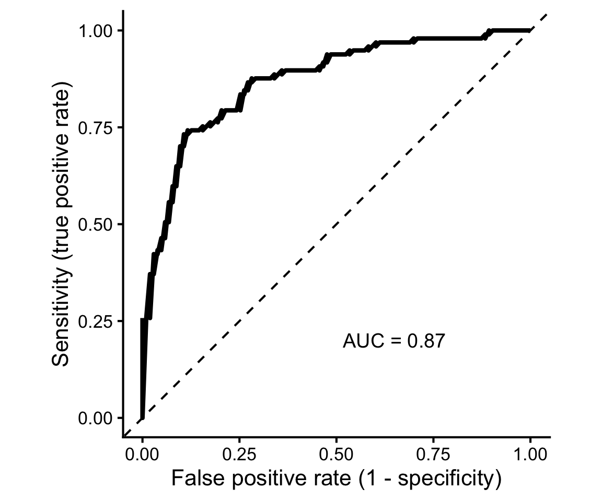

6 Model evaluation: classification
Machine Learning for Life Sciences
Once we have trained a classification model, we need to evaluate how accurately it predicts the outcomes of new observations.
For classification tasks, we compare the true class labels with the predictions made by the model.
Some classifiers produce predicted classes directly, while others provide a numerical score or estimated probability of belonging to a particular class. By applying a classification threshold, these scores can be converted into predicted class labels.
For example, with a probability threshold of 0.5:
- Predicted probability ≥ 0.5 → positive class.
- Predicted probability < 0.5 → negative class.
The choice of threshold influences the numbers of correct and incorrect classifications, and consequently many classification performance metrics.
6.1 Confusion matrix
A confusion matrix summarizes the relationship between the actual and predicted classes.
For binary classification, there are four possible outcomes:
| Predicted positive | Predicted negative | |
|---|---|---|
| Actual positive | True positive (TP) | False negative (FN) |
| Actual negative | False positive (FP) | True negative (TN) |
- True positive (TP): A positive observation is correctly classified as positive.
- True negative (TN): A negative observation is correctly classified as negative.
- False positive (FP): A negative observation is incorrectly classified as positive.
- False negative (FN): A positive observation is incorrectly classified as negative.
These four quantities provide the basis for several commonly used classification metrics.
6.2 Classification metrics
Accuracy measures the proportion of all observations that are classified correctly.
\[ \mathrm{Accuracy} = \frac{TP+TN}{TP+TN+FP+FN} \]
The corresponding misclassification rate is (1-).
Sensitivity (recall, true positive rate) measures the proportion of actual positive observations correctly identified.
\[ \mathrm{Sensitivity} = \frac{TP}{TP+FN} \]
High sensitivity means that relatively few true positive observations are missed.
Specificity (true negative rate) measures the proportion of actual negative observations correctly identified.
\[ \mathrm{Specificity} = \frac{TN}{TN+FP} \]
High specificity means relatively few negative observations are incorrectly classified as positive.
Precision (positive predictive value) measures the proportion of positive predictions that are actually positive.
\[ \mathrm{Precision} = \frac{TP}{TP+FP} \]
Sensitivity and precision answer two different questions:
- Sensitivity: Of all actual positive observations, how many did we identify?
- Precision: Of all observations predicted to be positive, how many were actually positive?
F1 score combines precision and recall using their harmonic mean:
\[ F_1 = 2 \times \frac{\mathrm{Precision}\times\mathrm{Recall}} {\mathrm{Precision}+\mathrm{Recall}} \]
F1 is useful when we want a single measure that balances precision and recall. Unlike accuracy, it does not directly account for true negatives.
6.3 Why class imbalance matters
Accuracy can be misleading when one class is much more common than another.
Consider a disease affecting only 5% of individuals. A classifier that predicts no disease for everyone will achieve 95% accuracy, despite failing to identify a single affected individual.
Its sensitivity would be zero.
For imbalanced classification problems, it is therefore important to consider metrics such as sensitivity, precision, F1, and precision–recall AUC rather than relying on accuracy alone.
The choice of metric should reflect the scientific question and the consequences of different prediction errors.
6.4 Classification thresholds
Sensitivity, specificity, precision, and F1 depend on how numerical prediction scores are converted into class labels.
Lowering the threshold for predicting a positive outcome generally increases sensitivity, but may also increase the false-positive rate.
Increasing the threshold generally reduces false positives, but may result in more missed positive observations.
For example, when developing a disease-screening model, missing affected individuals may be particularly costly, making sensitivity a priority. In other applications, false positives may lead to expensive or invasive follow-up procedures, making specificity or precision especially important.
There is therefore no universally optimal classification threshold.
6.5 ROC curves and ROC AUC
A Receiver Operating Characteristic (ROC) curve evaluates a binary classifier across different classification thresholds.
The ROC curve plots:
- True positive rate (sensitivity) on the y-axis.
- False positive rate (1 − specificity) on the x-axis.
Thus, the ROC curve shows the trade-off between correctly identifying positive observations and incorrectly classifying negative observations as positive.
The Area Under the ROC Curve (ROC AUC) summarizes the model’s ability to distinguish between the two classes, independently of any single classification threshold.
- ROC AUC = 0.5: no ranking discrimination, equivalent to random guessing.
- ROC AUC = 1: perfect discrimination.
- Higher ROC AUC generally indicates better discrimination.
ROC AUC can also be interpreted as the probability that a randomly selected positive observation receives a higher prediction score than a randomly selected negative observation, with half-credit for ties.
A high ROC AUC does not necessarily mean that a model performs well at a particular classification threshold or that its estimated probabilities are well calibrated.
6.6 Precision–recall curves
A precision–recall (PR) curve plots precision against recall (sensitivity) across different classification thresholds.
PR curves are particularly informative when the positive class is rare and identifying positive cases is the main objective.
Unlike ROC curves, precision directly reflects the proportion of predicted positives that are correct. Consequently, PR curves can reveal poor positive predictive performance that may be less apparent from ROC AUC.
The baseline precision of a random-ranking classifier corresponds to the prevalence of the positive class.
The area under the PR curve (PR AUC) summarizes performance across thresholds, although its value depends on the integration method. Average precision (AP) is another commonly reported summary and is not always numerically identical to trapezoidal PR AUC.
6.7 Which metric should we use?
There is no single best metric for every classification problem.
- Accuracy: Overall proportion of correct predictions; most informative when class imbalance and error costs are not major concerns.
- Sensitivity: Important when missing positive observations is particularly costly.
- Specificity: Important when avoiding false-positive classifications is a priority.
- Precision: Important when positive predictions need to be reliable.
- F1: Useful when balancing precision and recall.
- ROC AUC: Evaluates discrimination across classification thresholds.
- PR AUC / AP: Particularly informative for rare positive outcomes.
Finally, classification performance should be estimated using validation, cross-validation, or held-out test predictions, rather than relying on training performance.
The selected evaluation metric will also influence which model and hyperparameters we choose during model tuning.